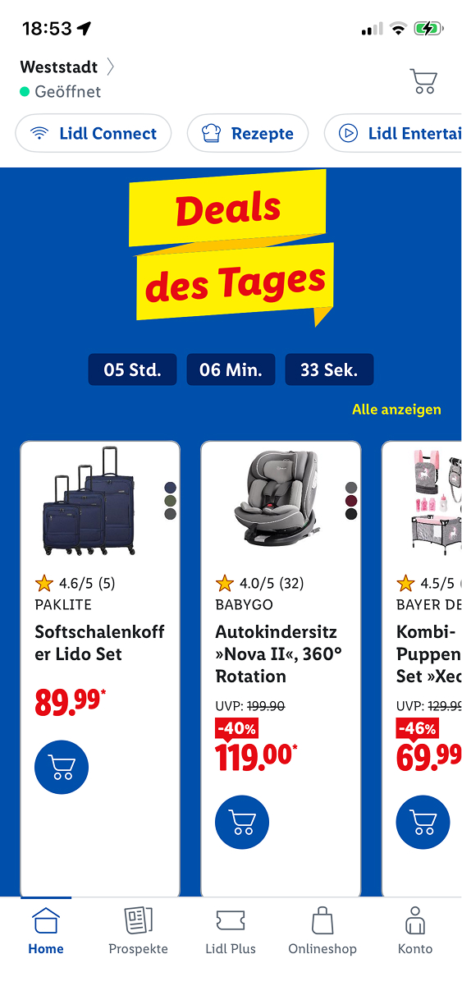

30.09 14:10
Julia, Ferdinand, Johann:
Brainstorming ideas for core concept. Setting up GitHub and FigJam structure and shared workspaces.
Structuring
the work ahead.
We set a 15 minute timer for coming up with ideas.
Ideas:
1 - Friedrichsau, looking for and recognizing different bird species ("Birding"), People who spend
all
their
time in front of screens and don't look around
2 - Wochenmarkt Münsterplatz, Eselsberg, communicating importance of farmers market in an age of
convenience,
sustainability,
strengthening local economy, interviewing buyers and sellers, collecting different statistics like
age
of
attendees, occupation, pricing, overall selection
Location ideas:
Illermündung, Friedrichsau, Kleine Lauterquelle, Donautal "Biotop", Blautalcenter, Lost Places
Activities:
Recognizing Birds, Trees, Insects, Wochenmarkt
15:20
We decided on the farmers market for now, as it has the most promise in terms of feasibility.01.10 14:30
Reading 01 through 04a, and 06.
15:45-16:45
Observing Wochenmarkt Eselsberg.Ferdinand's notes:
Anzahl Stände: 5
Kunden: 71 (mehr Besucher (aber kaufen nichts))
Davon:
Frauen: 49
Männer: 22
Ältere Menschen: 23
Erwachsene: 34
Jugendliche/ Junge Erwachsene: 4
Kinder: 9
2 Anhänger
2 Fahrzeuge
1 Stand
In unmittelbarer Nähe: 2x Bäckerei, Sparkasse, Friseur, Apotheke, Bibliothek, Döner, Pizza, Volksbank, Nähgeschäft, Fahrschule, Rewe, Tierarztpraxis
Viele Menschen (vor allem Kinder)
einige Menschen laufen vorbei, kaufen allerdings nichts
Johann's notes:
5 Stände, davon 4 Fahrzeuge und 1 Aufbaustand
5 Verkaufende Personen
Stände:
1 - Eier, Nudeln, Geflügel
2 - Fleisch / Metzgerei
3 - Dörrobst, Nüsse
4 - Käse, Milchprodukte
5 - Milchprodukte, Fleisch
Look & Feel:
Viel Blau, grün und Weiß
Geriffelte Vorhängedächer
Leer, vereinzelte Personen
Sehr ruhig, summen von Generator/Fahrzeugen/Gebäuden, vereinzelte Gespräche, Kinder rufen/spielen
Manchmal lange Transaktionen (teils ~5min)
Familiäre/persönliche Atmosphäre zwischen Käufer/Verkäufer
Handbeschriftete Schilder, Weiße Kreide
Handmännisch
Öfters Eltern mit ihren Kindern
Witziges, freundliches Branding/Werbung, Sprüche
05.10.2026 17:30
Started work on lightning demos and set up a shared presentation file.
Looking for apps that could fit the criteria. I'm working on a 'learning product', Julia's working
on a
guide
demo.
Ferdinand and Wiktoria are working on answering the five and six questions from the script.
Possible learning app ideas:
- Blinkist: 15-min podcasts
- Brilliant.org: online lectures
- LinkedIn Learning
Decided on Blinkist for now:
Blinkist as an audio Podcast app costs its users attention in short, repeated fragments.
At it's core are short audio sessions (roughly 15 minutes),
which are supposed to give you the central ideas of a much longer book in a condensed form.
They are intentionally positioned as things to listen to while working, travelling, doing chores,
etc.
As far as cognitive load goes, the user still has to listen and understand the material.
As condensed books, the podcasts must necessarily remove some of the content of the original
works,
meaning not all arguments, examples, context and nuance from the original author are retained.
An additional aspect is user retention/gamification where there are daily personalized
recommendations
(algorithms).
Interestingly, in this way blinkist can capture previously quiet moments:
If a user would have previously spent 15 minutes on the train daydreaming, now their attention is
spent
on an audio podcast.
It teaches in a highly dynamic way where you can learn something pretty much
anywhere at any time due to the bite-sized nature of the podcasts and it being a phone app, instead
of
sitting
down
at a desk and reading a book.
19:00
Finished my lightning demo slides for the learning product.Ferdinand & Wiktoria have finished writing up the script's questions:
Question 1: Who has this problem, and what is actually happening to them?
- Residents of Ulm who want to buy their vegetables and other foods locally instead of in the
supermarket.
- Most people, especially younger generations, get their food, such as vegetables, dairy products,
and
meat,
from
the nearest supermarket.
- On the other hand, there are the farmers themselves who sell their products at these farmers'
markets.
- The shrinking number of customers and visitors at these markets is disadvantageous for the farmers
because
they
sell fewer products.
- This could lead to multiple stands closing because they earn less money from fewer customers.
- Buying food from local farmers can be more sustainable than getting it from the supermarket.
Question 2: Given what we now know, what might we build?
An app/website for mobile devices that works as a local map of Ulm, with various points of interest
representing
local farmers'
Examples include:
- Ulmer Wochenmarkt (Münsterplatz)
- Söflinger Wochenmarkt
- Wiblinger Wochenmarkt
- Wochenmarkt am Eselsberg
- Wochenmarkt am Weststadthaus
- Users are able to interact with the points of interest on the map.
Each market provides information about:
- Opening hours
- Assortment
- Number of customers/visitors per hour
- Locally photographed images showing what the different farmers' markets look like
Question 3: What things exist in this system, and how do they relate?
The question is not quite answerable at the moment.
Our plan is to build a system containing:
- A map of Ulm with the different farmers' markets as points of interest
- Images showing the different markets
- Information about the markets, such as number of customers/visitors, opening hours, and
assortment
- Together, these elements will relate to each other and provide the consumer with a clean overview
of
the
farmers'
markets in Ulm containing everything they want to know.
Question 4: How is all of it arranged, and what does a screen contain?
- The screen contains a map with various points of interest representing the markets.
- The points of interest will be highlighted during opening hours.
The website contains information about:
- Opening hours
- Number of visitors/customers/clients
- Assortment
- Number of sales stands
A route planner leads to the nearest or selected farmers' market.
- When opening the website, the user is shown a map with the farmers' markets as points of
interest.
- The user can click on a market of their choice, which opens an interface containing images and all
the
necessary
information.
Question 5: What does it actually look and feel like?
Type:
A friendly typeface for headlines and a sans-serif font for normal text.
Colour:
The map consists of green and white elements, complementing a natural and sustainable environment
because most
of
the farmers source their food naturally.
Red map markers indicate the locations of the different markets.
Motion:
If a market is open at a certain time, its marker will contain an animation indicating its opening
hours.
States:
Most of the elements work together, such as the map, images, and information about the farmers'
markets.
Craft:
We are trying to implement a good amount of attention to detail.
What are we building and why?
- We are building a website that contains information about the different farmers' markets in
Ulm.
- We are doing this to increase awareness of these markets, so people might buy from them again or
more
often
than
before.
Who do we think it is for?
- For everyone, but especially for the younger generation, who might not be familiar with local
farmers'
markets.
- We want to encourage younger people to buy food from local stands again.
How far does the impact reach?
- Across the different quarters of Ulm.
- We want to build a map containing different points of interest across Ulm.
These include, for example:
- Ulmer Wochenmarkt (Münsterplatz)
- Söflinger Wochenmarkt
- Wiblinger Wochenmarkt
- Wochenmarkt am Eselsberg
- Wochenmarkt am Weststadthaus
How will we know if it worked?
- If there is a rise in customers at local farmers' markets.
- The ideal concept of our website is that it influences residents of Ulm to start buying their food
from local
sellers.
How long do we have and what can we spend?
We have time until January.
What could go wrong?
- Not gaining enough information about the different markets.
- Not finding enough people to interview.
- The website does not gain enough recognition among the people.
Not gaining enough information about the different markets.
Not finding enough people to interview.
The website does not gain enough recognition among the people.
05.10.2026 17:30
I'm working on a guide demo and the presentation.
The app I've chosen is called kulturclub ulm.
It provides an overview of cultural activities and events in Ulm, including important information
such
as date,
time
and location.
Its purpose is to make it easier for users to discover cultural activities in Ulm and decide which
events they
would
like to attend.
07.10.26
-
Team activity: thinking about who we can interview and what questions we should ask.
10.10.2026
-
Wiki has written template E-Mails, so we can e-mail the stakeholders.
And written down some questions for the upcoming interview
14.10.26 14:00
Julia overhauled the diary styling, with slight changes by me.
We're considering different apporaches to the diary in the future to make it simpler to write
entries, maybe by automatically
generating the HTML from individual markdown files.
We are working on updating and preparing the interview questions, as we are planning to start
interviewing tomorrow.
We are also looking to practice interviews with another group.
20.10.2026 15:00
Ferdinand transcribed his interview with a young adult (a friend of his) who barely or never
visits the Farmers Market in Ulm. The interview is in german language and was recorded on the 15th
of October 2026 (15.10.2026).
Coming up next is the transcribed interview it self in it's full length. (23 minutes)
Begrüßung: Hallo, wir sind Studenten an der THU und wir arbeiten zusammen an einem Projekt über den Wochenmarkt.
Wir würden gerne ein paar Interviewfragen stellen. Es ist insgesamt ein Fragenkatalog von c.a 15 Fragen,
über verschiedene Themen, wie Beispielsweise die Kundschaft, regionale Ware und wie man dies in einer Website
oder App umsetzen kann um das Wochenmarktangebot möglicherweise attraktiver für Sie zu gestalten. Wir suchen
gerade auch junge Personen raus, die vielleicht den Markt nicht regelmäßig besuchen oder auch gar nicht und
wollen dazu einfach mal ein paar Fragen stellen.
Allgeimeine Fragen:
F: Ich beginne erst mal ganz Allgemein, und zwar wer sind Sie? Und wie alt sind Sie?
A: „Ich heiße Nicole und bin 21 Jahre alt.“
F: Und wo kommen Sie her?
A: „Ich komme vom Bodensee.“
F: Und aktuell, wo wohnen Sie ungefähr aktuell?
A: „In Ulm.“
F: (...) Wo kaufen Sie denn Ihre Lebensmittel ein, wenn Sie zum Beispiel einen Wocheneinkauf machen?
Und wieso kaufen Sie sie dort ein?
A: „Ja meistens immer bei EDEKA oder REWE, weil man da relativ einfach hinkommt,
auch mit der Bahn und es ist nicht so weit. (...) Und (...)
ja die Angebote sind gut (...) ich weiß nicht. (...)“
F: Gerade im Bezug darauf. Besuchen Sie regelmäßig, ab und zu, selten oder gar nicht den Wochenmarkt?
Gerade hier in Ulm oder allgemein vielleicht auch andere Standorte. Es geht jetzt allgemein einfach um
das Thema Wochenmarkt. Und wieso tun Sie dies beziehungsweise tun Sie dies nicht?
A: „Also manchmal läuft man halt durch und guckt was es so gibt,
aber ich habe persönlich jetzt noch nie etwas da gekauft. (...)“
F: Also Sie sind dann regelmäßig auf der Fläche vom Markt?
Gefällt Ihnen dann beispielsweise auch die Gesamtatmosphäre auf dem Markt?
Also es ist ja auch ein potenzieller Hot-Spot für viele Menschen, die jetzt einfach nur dort hin gehen
um eine gute Zeit zu haben und jetzt nicht unbedingt da ihren Wocheneinkauf machen.
A: „Also ich mag die Atmosphäre nicht so, weil es mir einfach zu überfüllt ist manchmal.
(...) Aber manchmal ist es auch interessant zu sehen, was die Leute so anbieten, auch an selbst gemachten Sachen.“
F: Ja auf jeden Fall. Ja, wissen Sie zum Beispiel wo und welcher Markt sich in Ulm befindet
und wann die Öffnungszeiten oder an welchen Wochen-Tagen die verschiedenen Märkte sind?
A: „Ich glaube in der Innenstadt gibt‘s immer Mittwochs und Samstags einen aber sonst weiß ich von nichts. (...)“
F: Ja genau. Also, in der Innenstadt gibt es den Wochenmarkt auf dem Münsterplatz.
Der ist immer Mittwochs und Samstags von 6-13Uhr. Und dann gibt es noch einzelne Standorte,
gerade in unterschiedlichen Stadtteilen von Ulm, welche dann auch an einzelnen Wochentagen sind.
Allerdings meist am Nachmittag geöffnet sind. Ja, welche Werte verbinden Sie denn zum Beispiel mit einem Wochenmarkt?
Also so allgemein gefasst, was fällt Ihnen dazu ein, wenn Sie an einen Wochenmarkt denken?
A: „Ähm, ich nehme an es ist nachhaltiger. (...) Und wahrscheinlich auch besser von der Qualität.
(...) Weil die Sachen auch meist selbst hergestellt sind, nehme ich zumindest an. (...)
Und diese halt eher in kleineren Mengen produziert werden, als jetzt vom Supermarkt oder von einer Eigenmarke oder so...“
6.10.2026
10:53
Script-tasks: Wiktoria
01a - Attention and the Wandering Mind
- When I pull out my phone:
- When a message comes in and I notice it
- On the train when I have nothing to do
- When I want to change my music
- When I have nothing else to do
- During short breaks, e.g. at the gym between exercises
Conclusion: Mostly it’s just because I’m bored.
Only messages and music are concrete reasons, the rest is idle time I fill with my phone.
01b - Designing around Attention
Pinterest: Where work gets pushed onto me
Screen: Saving pins and creating/cleaning up boards
What I have to do as a user:
- Decide for every pin which board it belongs in
- Remember which boards I even have (with many boards, it’s a long list to scroll through)
- Create and name new boards myself when nothing fits
- Clean everything up by hand later: move pins, find duplicates, delete old stuff
- Remember where I saved something so I can find it again
Who pays the effort? Me.
What it would have cost Pinterest to solve it differently:
- Automatic board suggestions when saving (they already have the tech for this because of the
feed)
- Duplicate detection
- Multi-select and sorting tools for cleaning up
- That would be development effort, but not a big deal
Why it’s probably still like this (my guess):
- Sorting and cleaning up keeps me in the app longer, and that counts as engagement
- Pins that I sort myself give Pinterest better data about what I like
- Cleanup features don’t produce numbers that look good in a team report
Conclusion: Part of the designer’s work became my work, because it’s cheaper or more useful for
Pinterest than solving it for me.
02a - Abstraction and Grouping
Blur Test Results: „Portfolio Website“
„Projects“-Page:
Intended:
- Images read as dominant group
- Text descriptions grouped together
- Keywords as separate group
Recommendations:
- Date and category feel disconnected from the project -> Move date and category closer to project
title
- Horizontal layout could be reconsidered (text left, images right -> new layout: image on top;
description and
tags
below
„About Me“-Page:
Intended:
- „ZUR PERSON“ and text section works well
- Overall structure clear
Recommendations:
- Not enough spacing between sections (Education and Skills) -> increase spacing
- Skill categories not clearly distinguished from each other -> increase spacing between them
02b - Contrast, Convention and Metaphor
„Portfolio Website“ - Homescreen:
„Winner“: Large name has the primary attention
Could be quieter:
- „Studentin. Digital Media“ -> smaller or lighter color
- „Typografie, Layout“ -> smaller or lighter color
„About Me“-Page:
„Winner“: The „Über mich“ description should have primary attention
Could be quieter:
- „ZUR PERSON“ -> could be a little bit smaller
- „AUSBILDUNG & ERFAHRUNG“ and „KENNTNISSE“ -> reduce font size
03a - How Memory Works:
1.: Food Delivery Order:
Step 1: Restaurant selection
- User selects right place to order food
Step 2: Browsing; adding items
- User mentally calculates running total of prices to reach minimum order value
- -> Show live cart total (fixed at top)
Step 3: Multiple Variants
- User must remember which article has which variation when ordering multiple items
- → Display variants clearly in cart summary
Step 4: Cart review and changes
Step 5: Address Entry
- First-time users must recall complete address
- -> Save addresses, offer as defaults
Step 6: Payment selection
- User must choose payment method and remember details (prepare cash for change)
- -> Save default payment method, ask for confirmation only
Step 7: Delivery-Tracking
- User repeatedly checks app instead of being notified
- -> Send push notifications (order confirmed, preparing, on the way, arriving)
2.: Online Doctor Appointment Booking
Step 1: Doctor/Speciality Search
Step 2: Available Appointments
- User must remember and compare multiple appointment times by clicking back and forth
- -> display all available appointments in calendar overview on one page
Step 3: Reason for Appointment
- User must categorize symptoms correctly and is uncertain if their free text descriptions fits
- -> Provide predefined categories/checkboxes instead of free text input
Step 4: Personal Data Confirmation
Step 5: Insurance Info
- User must recall insurance number
- User must figure out: „Does my insurance cover it or do I have to pay privately?“ (Depending on
the
type of
appointment)
- -> save insurance data, allow photo of insurance card, clarify cost question
Step 6: Final Confirmation
03b - Mental Models and Learnability
chosen product: Spotify
- What I believe happens when I press the main button (The „play“-button): The song just starts
playing
- What actually happens: connection to Spotify’s servers is established - song is streamed - there
could
be a
short
delay while the song buffers - license check runs (Premium/Free) - Playback position syncs - song is
stored in
your
cache
chosen product: Gmail-App:
- What I believe happens when I press the main button (The „send E-mail“-button): The email gets
sent
- What actually happens: email is first moved to Outbox folder - It’s then uploaded to the mail
server
-The
server
processes it and sends it through various mail servers to the recipient - there could be delays
(slow
servers,
network unstable) - (email could fail: land in recipient’s spam folder, invalid address,..)
04a - Prediction and Surprise
My Lightphone-Design:
1.: Music-app:
- User sees playlist but unclear how to navigate to the „Now-Playing“ view
- Navigation between screens not clearly signaled
2.: Transport-App:
- Departures list looks static with no visual cues of interactivity
- User doesn’t know if entries are tappable or just informational
3.: Contacts/Messages:
- Contacts detail has „call“ and „message“ buttons
- Messages chat doesn’t have these buttons
- -> User expects consistent interaction patterns
01a)
-
Day 1, 2 and 3 :
- before going to bed
- before waking up and going to the toilet
- before doing this task
- after cleaning the house
- after washing the dishes
1b)


If you want to delete your account you first have to find your way through
five screens. If you want to create a new account you just have to scroll down
in the first screen.
2a) The Blur Test


The groups I see with blur:
- the circles in the upper half of the screen
- a colorful square beneath
- at the bottom, five symbols, that are on the same line
- at the top of the four big circles is some text
- at the very top is another group with text
The groups I see sharply
- at the top: searchbar, favourite and card group
- then the four circles and a little title on top
- underneath is another group to show more
- then you come to the coupon section with a big picture and some text
- at the bottom is the menu group
2b) One Loud Thing


I turned down the the red pricing, because if your interested to buy, then you can take a closer look of the prices.
Also I turned down the timer, because it was still competing with the title
3a) The Red Dots
[06.10.2026, 12:30 - Ferdinand Schoser]
Here are different answers of the few exercises form the script over the last few chapters by
me
[06.10.2026, 12:45 - Ferdinand Schoser]
Attention and the Wandering Mind
Most of the time when I‘m outside I carry my phone in my pocket. So when reaching for my phone it is
mostly
because I remembered that I have my phone with me. Before that I‘m mostly just walking, talking to
someone or
listening to music. Then suddenly a thought appears, that wants to know something, like researching
a
specific
thing on the internet or checking my messages.
[06.10.2026, 12:55 - Ferdinand Schoser]
Designing Around Attention
I use Spotify daily and I think the effort, that has been moved onto me is probably organizing my
own
library
and playlists.
06.10.2026, 13:15 - Ferdinand Schoser]
Abstraction and Grouping
Because we don‘t have a design yet, I chose the navigator screen of my Figma project from
summer-semester 2026.
While blurring my eyes I could still seperate each elements from each other. For example the the of
the
app in
the top left corner, the „from-to“ formular in which you can select destinations, the date, time and
person list
and the big search button on the middle bottom. Of course there is still the app navigation on the
bottom of the
screen, which can also be seen as a seperate element.
[06.10.2026, 13:30 - Ferdinand Schoser]
Contrast, Convention and Metaphor
I chose a poster we designed in Media-Design and Typography. At first glance the text is obviously
fighting for
dominance.
The attention snaps immediately onto the date, that is shown on the poster and the name of the
exhibition. Yet
there is a higher contrast on the text of the heading, because the text color is white and the
background color
is grey. On the text of the date , the background color is in a slightly lighter grey tone and the
text
color is
also white. So I would say the name of the exhibition grabs the attention more due to the
contrast.
[06.10.2025, 13:35 - Ferdinand Schoser]
How Memory Works
I didn‘t get how i should master the exercise.
[06.10.2026, 13:40 - Ferdinand Schoser]
Mental Models and Learnability
I use Spotify again as an example because I use it almost daily. On the far right of the bottom
navigation there
is a „Plus-Symbol“ that says „Create“
My initial thought would actually be, that i could create or upload music myself by pressing the
button.
Probably because it is the common thing on social media like Instagram, TikTok and others. By
pressing
the
button you can create playlists, jams or mixes. Even with other people together.
06.10.2026, 13:50 - Ferdinand Schoser]
Prediction and Suprise
I currently don‘t have someone with me, that I can show a product of mine. But I simulated it if
someone
would
use my portfolio website for the first time. By just staring at the homepage or different pages of
the
website
you wouldn‘t actually know where the clickable buttons are. Only by hovering over them you can see a
change on
the pointer, and the text turns into a much lighter variant compared to before (and it also starts
jumping up).
I think this would definitely be a moment, where the person trying out the website would
hesitate.
06.10, 16:00
Author: Johann
Phone usage:
I noticed that most often I would take out my phone to:
- Check my messages
- Note down a thought or task for later
- start listening to or control my music.
What I was doing at those moments was mostly either idle time (Like waiting for the bus or being in
an
elevator),
when I was bored with my current task or activity, or when taking a break or eating.
Effort moved onto the user:
An instance of this happening is with the Google Keep app. It used to be so that you could write a
note
and instantly set a reminder for that note from the note creation screen.
Now, you need to leave the note editing screen, long-press the note you've just made, and then
select
the "set notification" button. They likely optimized for interface complexity with this move,
as hiding the button behind the secondary long-press action makes the primary note creation screen
simpler, at the expense of users who often use the reminder feature.
05.10.2026 19:09
- Author: Johann
Used ChatGPT to reformat text cleanly for the diary.
08.10.2026
-
Author: Julia
Used Claude because I had a problem with implementing the Nested accordion.
Later I found out it was because of the transition i wanted to implement, so the accordion
opens and closes more smoothly, but for now I deleted that part.
Also added defer to line 9, so javascripts loads before it gets called
14.10.2026
-
Author: Johann
Used ChatGPT to generate some text for the consent form.
Date
-
Author:
What have I done